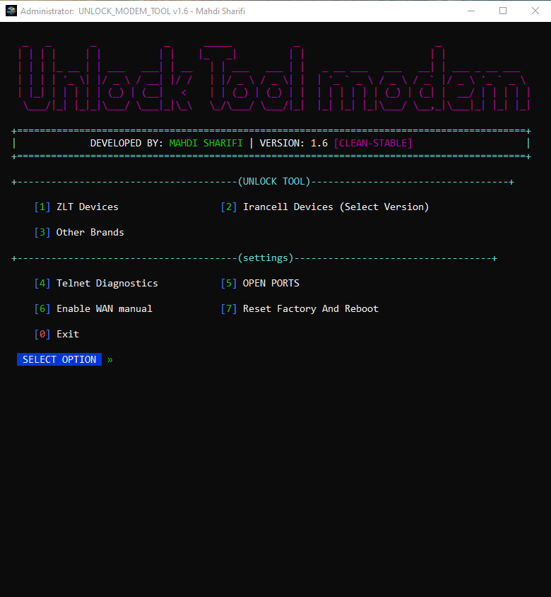
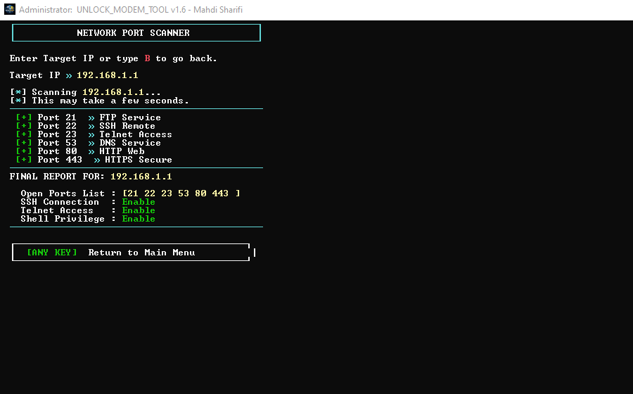

License Access
Designed around controlled access, version checks, and a cleaner user flow.
UNLOCK MODEM TOOL is built for supported LTE modem families with a modern desktop interface, version control, license access, device menus, and a public support flow.

این صفحه برای معرفی پروژه، اعلام وضعیت انتشار، نمایش دستگاههای پشتیبانیشده و هدایت کاربران به تلگرام ساخته شده است. نسخه نهایی اپلیکیشن بعد از آمادهسازی در بخش Releases و کانال تلگرام اعلام میشود.
ورود به تلگرام @UNLOCK_MODEM_TOOLDesigned around controlled access, version checks, and a cleaner user flow.
Organized device families, active tools, demo states, and upcoming models.
Modern cyber-style interface prepared for public release and support.
Users can follow release news, device support updates, and announcements.
Final compatibility can depend on firmware and device condition.
STATUS: PUBLIC PREVIEW
APP_VERSION: 1.1.0
RELEASE: COMING_SOON
SUPPORT: TELEGRAM
CHANNEL: @UNLOCK_MODEM_TOOL


The final application package will be attached to GitHub Releases after testing. Join Telegram to receive the release announcement.
Not yet. The public installer will be published through GitHub Releases and Telegram.
Join the Telegram channel or support group from the button above.
No. Support depends on model, firmware, region, and device condition.
Use the tool only on devices you own or are authorized to service.